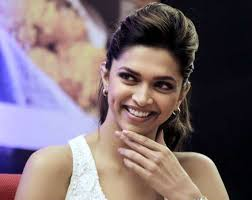

Deepika Padukone
Deepika Padukone is an Indian film actress and producer who has worked in Hindi, Tamil, and Kannada films. She was born on January 5, 1986, in Copenhagen, Denmark, but was raised in Bangalore, India. She is the daughter of the badminton player Prakash Padukone and her mother is a travel agent. One of the highest-paid actresses in India, she is considered one of the country's most popular and attractive celebrities. Padukone has received several awards, including three Filmfare Awards. She features in listings of the nation's most popular personalities, and Time named her one of the 100 most influential people in the world in 2018.
Deepika Padukone started her acting career in 2006 with the Kannada film "Aishwarya" and made her Bollywood debut in 2007 with the film "Om Shanti Om" opposite Shah Rukh Khan. She received critical acclaim for her performance in the film and won the Filmfare Award for Best Female Debut. Since then, Deepika has appeared in several successful Bollywood films, including "Bajirao Mastani," "Chennai Express," "Yeh Jawaani Hai Deewani," "Padmaavat," and "Piku." She has won several awards for her performances, including three Filmfare Awards. Deepika has also been involved in several philanthropic activities. She has been associated with various NGOs and has been vocal about issues like mental health and gender equality. In 2015, she founded The Live Love Laugh Foundation, which aims to create awareness about mental health in India. Apart from her acting career, Deepika is also a successful model and has been the brand ambassador for several well-known brands. She has also been featured in several international magazines, including Vogue and Vanity Fair. Deepika Padukone is married to actor Ranveer Singh.
Apart from her film projects, Deepika is also actively involved in her philanthropic work through The Live Love Laugh Foundation, which focuses on creating awareness about mental health in India. She has also been associated with various other initiatives related to mental health, including the "Frontline Assist" program for COVID-19 frontline workers.
"I am who I am. I don't try to be someone else."
- Deepika Padukone